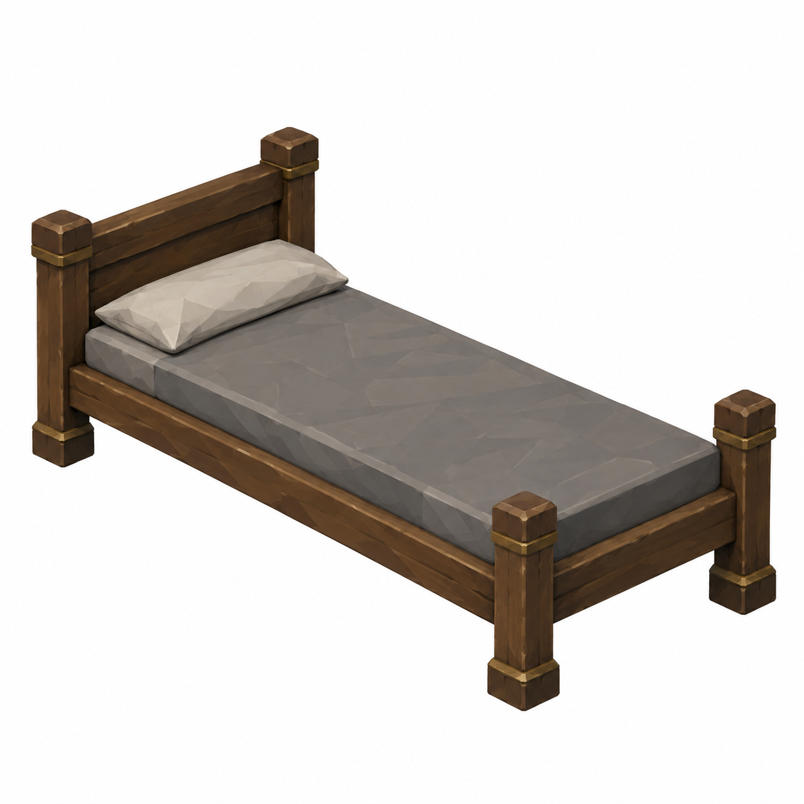
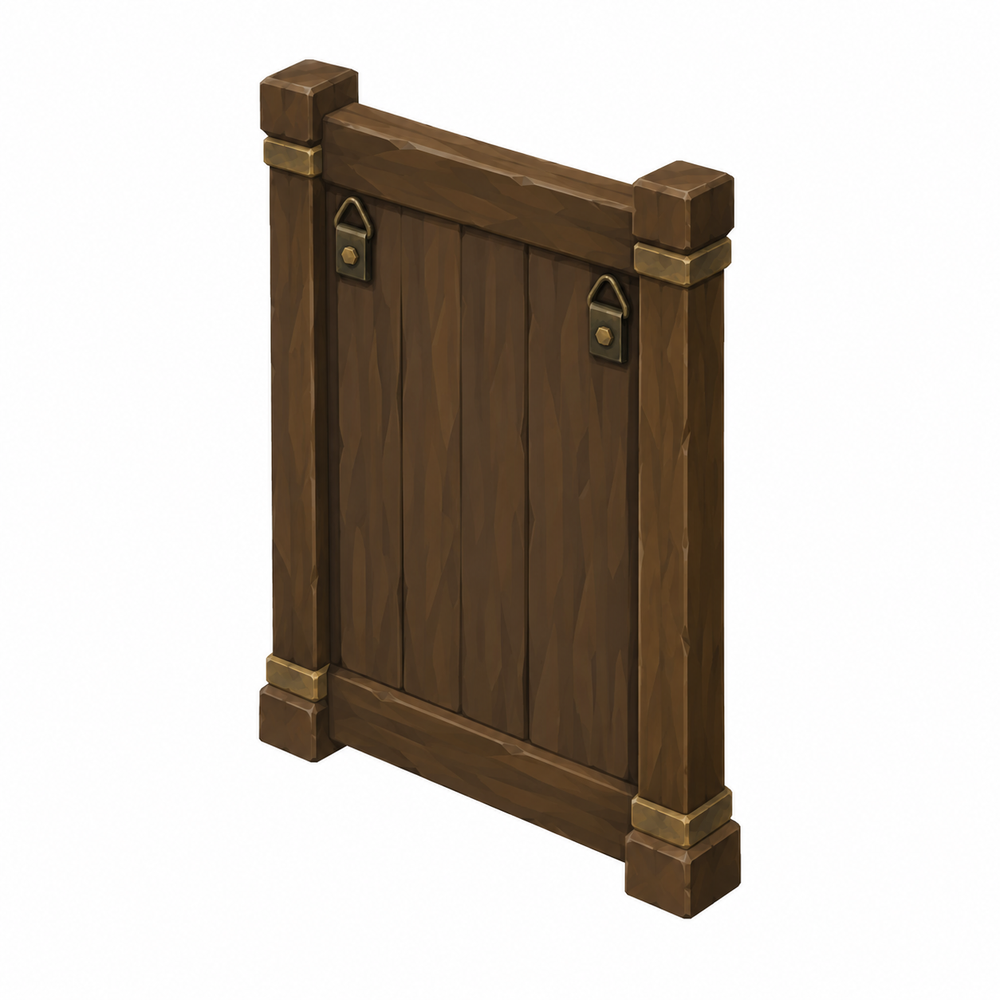
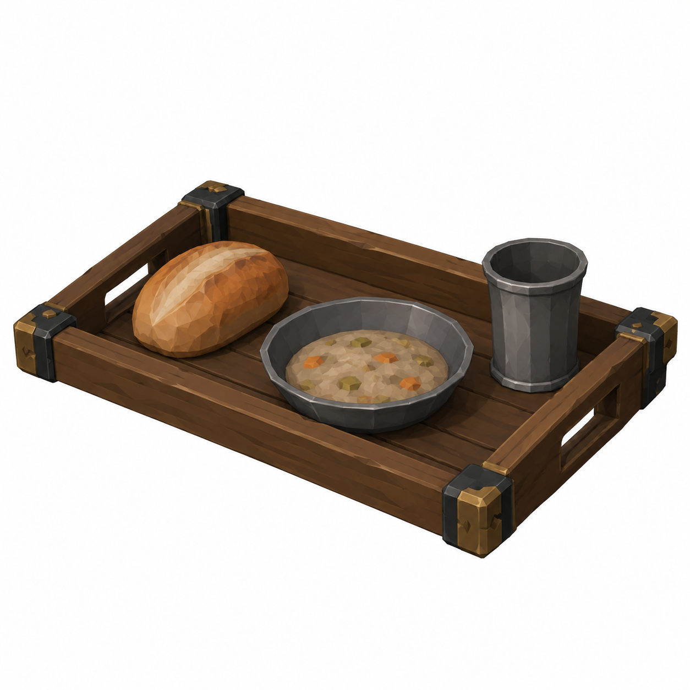
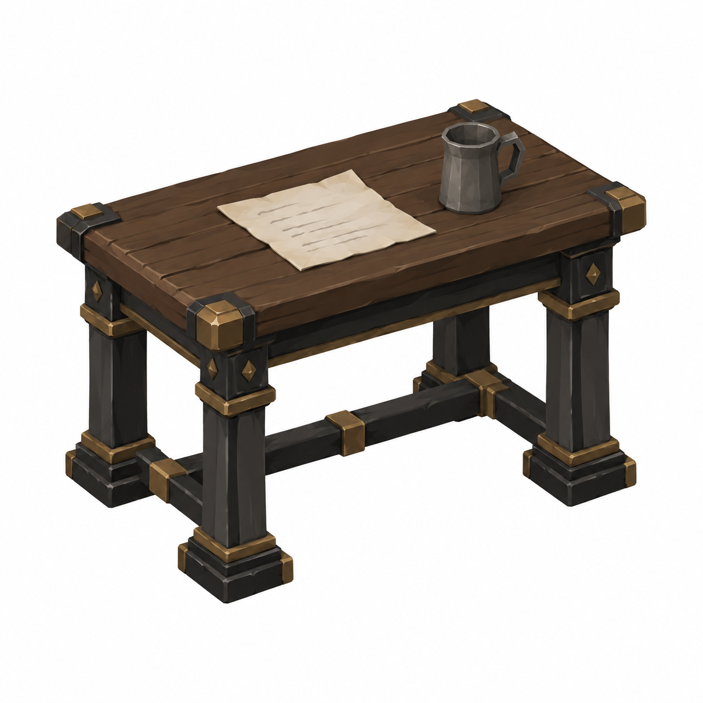

NurseCot
1.90 ×0.70m; mattress top0.45

Yeni revizyon taslağı; nihai görsel onayı bekleniyor.
Mustafa yorumlarına göre ölçü ve eksik parça taslakları. Onay durumu: yeni görseller kullanıcı ve Mustafa onayını bekliyor.
Ortak ana yatak 2.00×0.90, üst0.60, başlık≈1.05m aynen korunur; 123/154/145 reuse. WardLinen yeniden üretilmedi. Başucu ve ekran mevcut referansları korunur.
Tam ölçüler ve kaynak yorumlar · Ölçekli ölçü zarfı paftası
1.90 ×0.70m; mattress top0.45

Yeni revizyon taslağı; nihai görsel onayı bekleniyor.
0.60 ×0.90m; frontturnedaway

Yeni revizyon taslağı; nihai görsel onayı bekleniyor.
0.45 ×0.30m tray; heightunspecified

Yeni revizyon taslağı; nihai görsel onayı bekleniyor.
table0.80 ×0.50 ×0.75m; letter/coldcup

Yeni revizyon taslağı; nihai görsel onayı bekleniyor.
45° ayrı referans, beyaz fon, faceted düz boya. Ölçüler brief hedefidir; raster görselden kesin CAD ölçümü çıkarılmaz. Önceki onaylı dil korunur. Tripo/Unity/rig/placement yapılmadı. Runtime okunurluk, sockets ve fit kontrolleri ilgili lane'de.